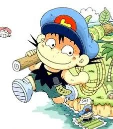

레오
초등학생
무인도에서 1달 이상 생존하고 뗏목으로 탈출
아마존 독사에게 물리고 자력 회복
아마존에서 1달 이상 생존하고 뗏목으로 탈출
조난 상황에서 독초인 사막 멜론을 복용하고 생존
사하라 사막에서 조난 당하고 15일 동안 도보 탈출
알래스카 북극곰의 공격으로부터 생존
알래스카 빙하 지대에서 조난 당하고 23일만에 구조
두리
초등학생
정글에서 화산폭발에 휘말리고 땅에서 기어나와 생존
세렝게티에서 하이에나를 비롯한 맹수의 습격을 받고 생존
태평양에서 구명보트를 타고 21일간 표류 후 구조
시베리아 야생 늑대 무리의 습격 격퇴
시베리아에서 야생동물을 사냥하며 생존
모모
초등학생
말레이시아 정글의 동굴에서 생매장 당하고 지하수로를 헤엄쳐 탈출
미상의 방법으로 정글에서 탈출(본인 말로는 동굴보다 힘들었다고)
중국 산맥에서 18일간 조난 당하고 현지 화전민에게 구조
언어가 통하지 않는 중국 현지 화전민 가정에서 5개월간 거주
일본 여행 도중 대지진과 쓰나미를 겪고 잔해더미에서 구조
남극에서 황제펭귄 투어 중 길을 잃고 6일간 조난
떨어져나간 작은 빙하를 타고 6일간 표류하다 구조
모모의 아빠
동사무소 방위병 출신
동굴 생매장 제외 모모와 생존 경력 동일
산에서 함정을 파 멧돼지와 고라니 사냥
1일만에 약 3평 크기의 산악 비트 구축
시베리아 호랑이의 공격에서 생존
살아있는 매미를 잡아먹는 등 충식으로 연명
군생활에 콤플렉스 있어서 특수부대 출신이라 구라침
...동사무소가 실미도에 있음?
초원에서살아남기 화산에서 살아남기 얼마나 다시본지 기억도 안나네